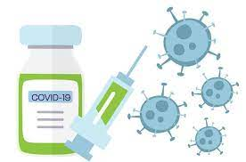
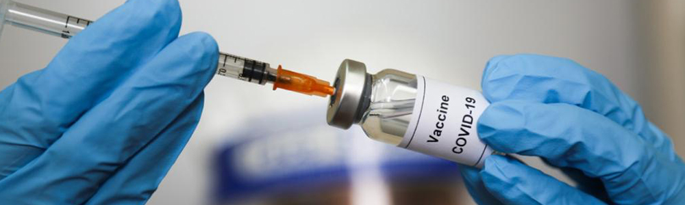
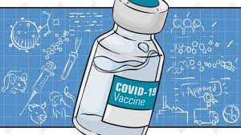
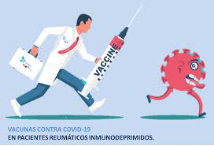

Vacunación contra el Covid 19 
-
Inicio
Vacunas Covid 19
Las vacunas contienen fragmentos minúsculos del organismo causante de la enfermedad, o las
‘instrucciones’ para hacer esos fragmentos. Asimismo, contienen otros ingredientes para mantener la seguridad y
la eficacia de la vacuna. Estos últimos se incluyen en la mayoría de las vacunas y se han utilizado durante
decenios en miles de millones de dosis de vacunas.
Cada componente de una vacuna cumple una finalidad específica, y cada ingrediente se somete a diversas pruebas
durante el proceso de fabricación. En ese proceso se verifica la seguridad de todos los ingredientes.
Antígeno:
Todas las vacunas contienen un componente activo (el antígeno) que genera una respuesta inmunitaria, o las instrucciones
para producir ese componente activo. El antígeno puede ser una pequeña parte del organismo causante de la enfermedad,
por ejemplo, una proteína o azúcar, o bien el organismo completo atenuado o inactivado.
Ensayos clínicos:
Después del desarrollo inicial, las vacunas pasan por tres fases de ensayos clínicos para garantizar su
efectividad y seguridad. En el caso de otras vacunas que suelen utilizarse en los Estados Unidos, las tres fases
de los ensayos clínicos se realizan una por vez. Durante el proceso de desarrollo de las vacunas contra
el COVID-19, estas fases se superpusieron para acelerar el proceso de manera tal que las vacunas pudieran
utilizarse lo antes posible para controlar la pandemia. No se omitió ninguna de las fases de los ensayos.
En los ensayos clínicos de las vacunas contra el COVID-19 han participado decenas de miles de voluntarios de
diferentes edades, razas y grupos étnicos. Los ensayos clínicos de las vacunas comparan los resultados
(como la cantidad de personas que se enferma) entre las personas que se vacunan y las que no. Debido a que la
transmisión del COVID-19 sigue siendo generalizada, los ensayos clínicos de las vacunas se realizaron con mayor
rapidez que si la enfermedad hubiese sido menos común. Los resultados de estos ensayos han demostrado que las
vacunas contra el COVID-19 son efectivas, especialmente para prevenir enfermedades graves, hospitalizaciones y
muertes.


